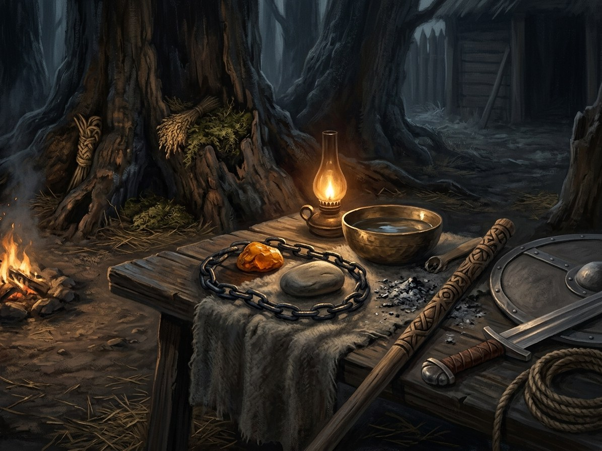

Priesaika (oath-binding)¶
What it is¶
Oath-binding: an oath sworn with the right form is literally binding. It is the old law of the land turned into magic: the oath-breaker pays, physically.
Priesaika (oath-binding)

Priesaika (oath-binding) · school¶
Type |
school |
Family |
asked |
Note |
Priesaika: binding sacred oaths sworn by earth, fire, water, or thunder. |
Who can use it (path & tier)¶
Anyone who swears with the right form. The Krivis (tier 4) and tier 3 priests conduct oaths. Patrons: Perkūnas and Žemyna.
How it works (medium, words, timing)¶
Earth oath (kissing or eating soil): the oath-breaker’s own land rejects him; crops fail, horses throw him, the forest loses him. Thunder oath (on an axe, or by an oak struck by lightning): Perkūnas enforces it. Blood-brotherhood (susibroliavimas): shared fate; one feels the other’s death. Safe-conduct oaths count. Christian oaths on relics are enforced by the Iron Saint among the Order’s men, so the Order distrusts converts who swore on pagan forms first. An oath sworn on a claimed person’s name binds the Force too.
Costs¶
The breaker’s: lightning, a rejecting land, the loss of the god’s favour. The keeper’s: Kęstutis pays for every word he has sworn since the ox oath (Book VI ch. 28). A precise oath pleases Perkūnas, who reads the words and finds them exact, not because he forgives but because exactness pleases him (Book VI ch. 13).
Limits & counters¶
Oaths are kept to the letter by gods: Perkūnas and Gabija are exact, and what is deceived by the letter is still taken by the spirit (Book VI ch. 11). An oath cannot be sworn by one who does not mean it, or it rings false (the pebble dies at the false baptism, Book I ch. 19).
Folk basis [Historical record]¶
[Historical record]. Pagan Lithuanians swore on the gods or the earth, with animal sacrifice; treaties were sworn in pagan form. In 1351 Kęstutis swore a pagan oath to Louis of Hungary with an ox, promised baptism, and left without keeping it. Earth-oaths and thunder-oaths are later folklore and reconstruction. The Rus’ swore by Perun in the 10th century.
Notable practitioners¶
The Krivis; Kęstutis (the ox oath, Book VI ch. 13, 17; Rudau, ch. 24); Skirgaila (the broken safe-conduct, Book I ch. 1, 2, 8); Vytautas (Ostrów, Book II ch. 11; the renewal, Book III ch. 17).
- School
- Asked power · an oath with the right form is literally binding
- Tier
- Anyone who swears with the right form. The Krivis (tier 4) and tier 3 priests conduct oaths
- Casting
- Swear. Earth oath: kiss or eat soil. Thunder oath: on an axe or by a lightning-struck oak. Blood-brotherhood: shared fate
- Components
- Soil, an axe or a struck oak, blood. Patrons: Perkūnas and Žemyna
- Cost
- None at the swearing. The keeper pays by keeping (Kęstutis, Book VI ch. 28), the breaker by forfeit
- Duration
- Until kept or broken
- Limits
- An oath cannot be sworn by one who does not mean it: it rings false. Gods keep to the letter, and take by the spirit
- Counters
- Christian oaths on relics are enforced by the Iron Saint among the Order's men, which is why the Order distrusts converts who swore on pagan forms first
Earth oath. The breaker's own land rejects him: crops fail, horses throw him, the forest loses him.
Thunder oath. Perkūnas enforces it. Lightning seeks the breaker.
Safe-conduct. Counts as an oath: Skirgaila's broken safe-conduct of August 1382.
Oath plus claim. An oath sworn on a claimed person's name binds the Force too: Vytautas swears to Perkūnas before Grunwald, so Perkūnas must act.
Forfeit. Lightning, a rejecting land, the loss of the god's favour in war. Perkūnas's enmity toward Skirgaila's line follows the broken safe-conduct.
Connections¶
graph LR
krivis["Krivis of Šventaragis"]
perkunas["Perkūnas"]
priesaika["Priesaika (oath-binding)"]
zemyna["Žemyna"]
perkunas -->|Patron of| priesaika
zemyna -->|Patron of| priesaika
krivis -->|Practises| priesaika
style priesaika stroke-width:3px